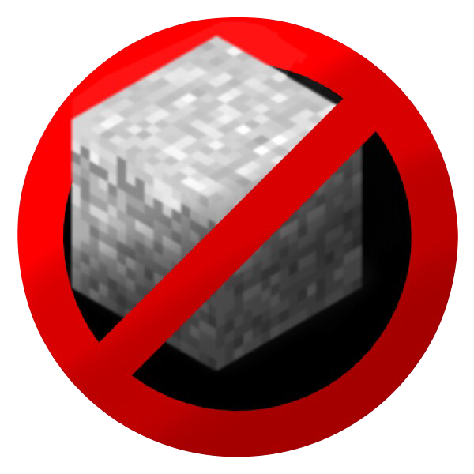

About Ghostblocks
Welcome to Ghostblocks, where blocks are only an illusion! Ghostblocks enables players to craft and build disappearing blocks: these "Ghost blocks" look real, but disappear when players get too close. Ghost blocks are perfect for building secret bases, mob traps, hiding entrances, trolling, and more! Use them to disguise your chests and precious loot, and intruders will never know where your stash is hidden!
Using Ghostblocks
To install Ghostblocks, simply drag the downloaded file "Ghostblocks.jar" into your server's
/plugins folder and restart the server. Crafting Ghostblocks is simple: by harnessing the power of Ghast Tears and precious metals, players can craft Ghostdrops which can be applied to any block in Minecraft. To craft a Ghostdrop, simply surround a Ghast Tear with either Iron or Gold Ingots in a Crafting Table. Ghostblocks appear to every online player, however they disappear when players get too close. They may also disappear when clicked. Ghostblocks do not modify your world in any way, and will not exist if the plugin is uninstalled. They are illusions.
Support a hard-working developer! By purchasing Ghostblocks, you are not only buying a fun, simple, and lightweight Minecraft plugin, but you are also supporting me (the developer). Coding plugins takes time and effort, so your purchase really makes a difference. If you buy this plugin, you can be guaranteed a working piece of software and top-tier support, should you need any. Thank you!
SpigotMC approves Minecraft plugins and processes all payments. An account is required to view and purchase - to register, click here.